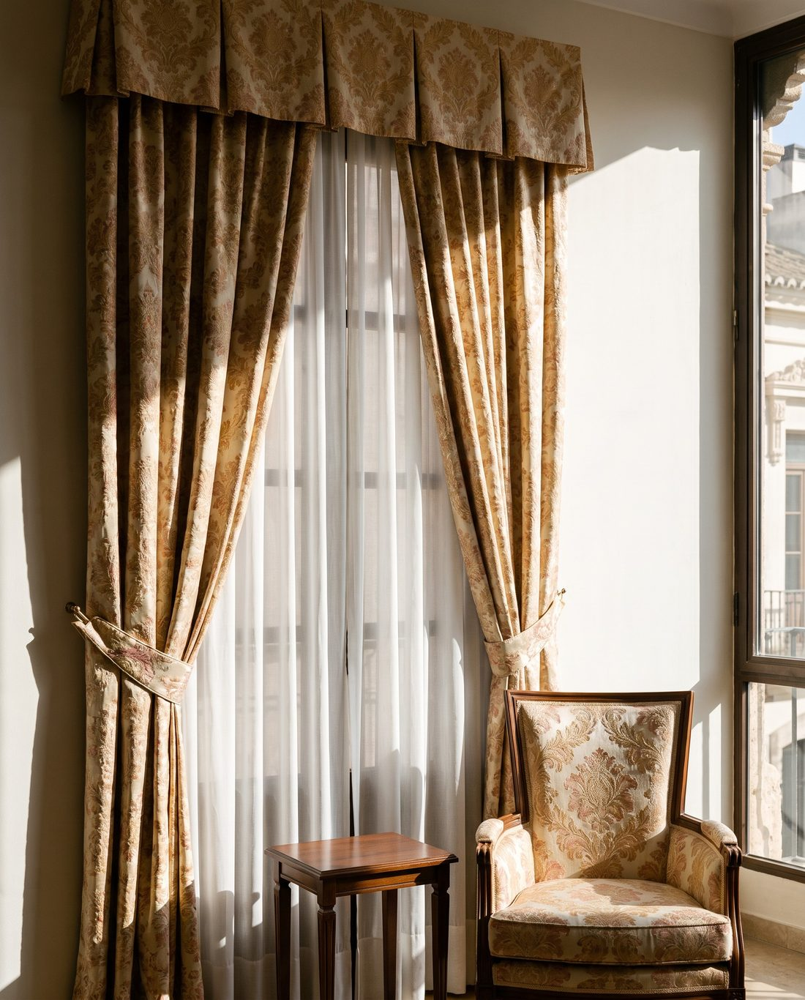
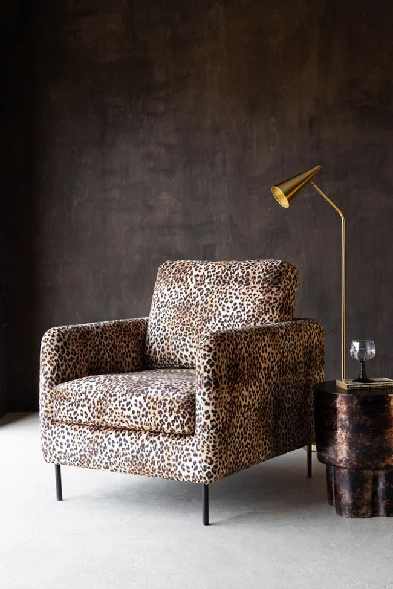
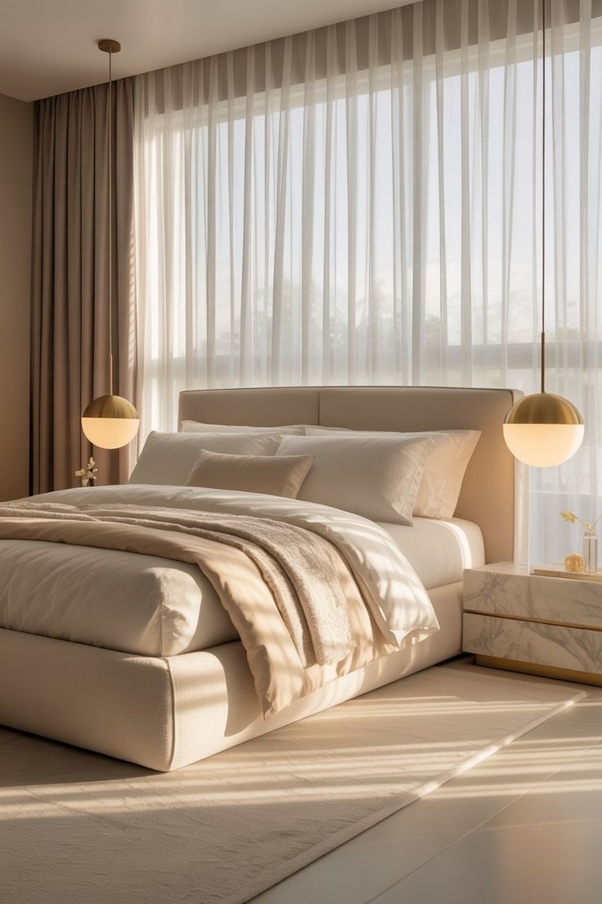

A medida
Cortinas
Confeccionadas a la medida de cada ventana, con la tela que elijas.
✦ Decoración e interiorismo
Cosemos para tu casa con las mismas telas que usamos para los trajes de fallera: sedas, brocados y terciopelos. Te ayudamos a elegir la tela y lo confeccionamos en nuestro taller.
✦ Qué hacemos
Más allá de la indumentaria, llevamos décadas ayudando a familias valencianas a vestir también sus hogares. Hacemos cortinas, tapizados, colchas y complementos textiles, y todo se confecciona a medida.

Confeccionadas a la medida de cada ventana, con la tela que elijas.

Tapizados con las telas de nuestro taller.

Hechas a la medida de tu cama.
✦ Cómo trabajamos
Escríbenos o ven a la tienda con lo que tienes en mente. Si ya tienes las medidas, mejor.
Te asesoramos con calma para dar con el tejido y el color que van con tu casa.
Cada pieza sale de nuestro taller, hecha con el mismo cuidado que la indumentaria.
✦ Ideas
Cortinas, estores, colchas y butacas: algunos ambientes para inspirarte. Toca una foto para verla en grande.
✦ Ven a vernos
Ven a la tienda con tu idea y las medidas, o escríbenos y te contestamos.
C/ Vicent Gallart, 49
46011 Valencia
Puedes mandarnos fotos de la habitación y las medidas.
Consulta el horario de la tienda en la web principal.
Ver horario →